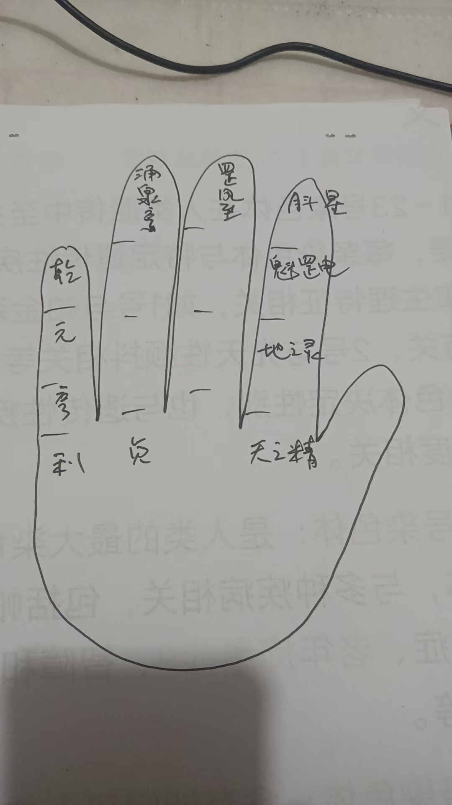
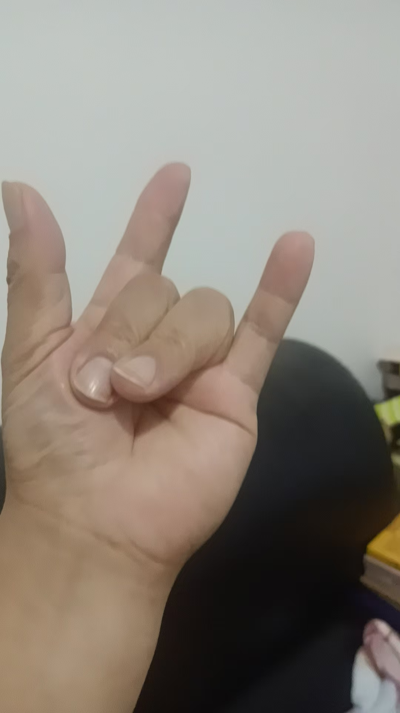
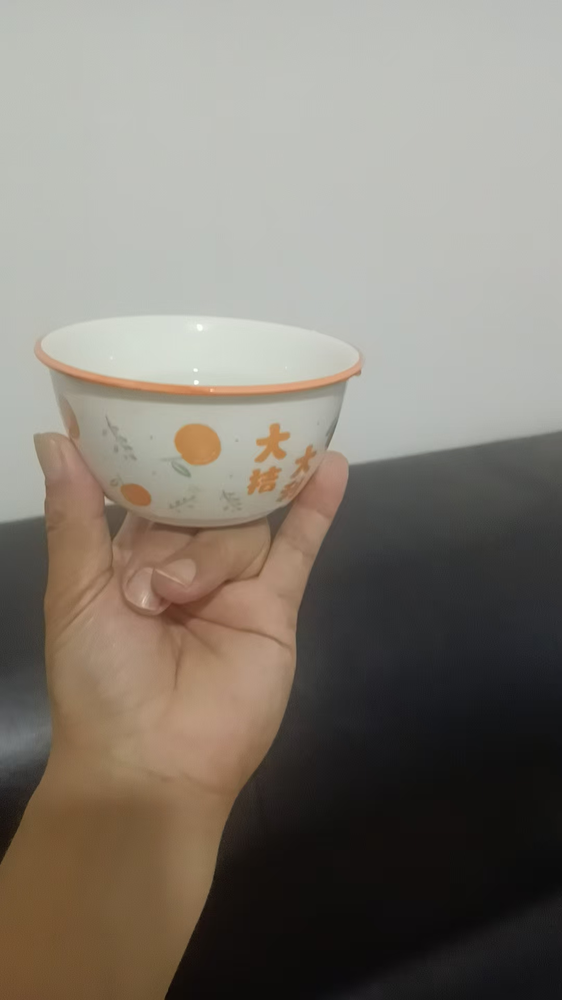

20251208【玄门修真录】剑指修持与心法演练 紫鸢真人传授
修炼修行符咒术法风水布局 原始对话记录【玄门修真录】剑指修持与心法演练 紫鸢真人传授
第一章：剑指开光与修持（外练）
【修法总纲】
此法为《乾元亨利贞》之基础应用。欲使剑指具备能量，需每日修持，将自身能量注入指尖。修成后，剑指发热、麻胀，书符、指物皆有灵效。
【修持时间】
每日辰时（早晨 7:00 — 9:00）。
需连续修持七天，每天念诵并演练四十九遍。
【修持仪轨】
1. 站桩：面向太阳，身心放松。
2. 掐诀：大拇指开始掐诀（按传承手势）。
3. 咒语：口念修持咒（输入能量）：
> 天之精，地之灵。
> 魁罡电，月斗星。
> 罡风至，涌泉亨。
> 乾元亨利贞！
4. 发劲：
* 念毕，右手结剑指。
* 向外猛力甩出（指向目标或虚空）。
* 同时大喝一声：“开！”
* （观想：从剑指尖端射出一道能量气，如电流或白光。）
【感应验证】
剑指打开后，指尖会有发热或酥麻之感，此乃气通之象，因人而异。

第二章：三山印与符水法（应用）
【三山印托水】
左手结三山印（大指、食指、小指竖起，中指无名指弯曲），托起一碗清水。


【虚空讳字法】
右手结剑指，向碗中水面虚空书写讳字。
此字共四笔，每写一笔，念一句口诀。

【书符口诀】
一飘金牛头，
横断日月流，
倒下千斤坠，
一挑鬼神愁！
【要旨】
剑指修练好，手指发热，以此能量写入水中，方能制成法水。
第三章：法器运用与禁忌
【宝剑与剑指】
* 剑指：乃随身法器，能量充足时，可隔空化解千里之外之事。
* 宝剑：若持有实体宝剑，无需书符，直接以意念命令业障离开。观想灰气变白亮，病患即愈。
【重要禁忌：先礼后兵】
凡使用宝剑或强力剑指法前，必须“先打招呼”。
* 原因：有些病人体内或家中有“顶仙”或保家仙。若不提前说明直接动法，宝剑煞气会伤及附体仙家或家神。
* 方法**：使用前，口头说明或用念力发出信息：“一切神煞皆要回避，吾今治病（或办事），免伤无辜。”
第四章：静坐与法身演练（内炼心法）
【进阶心法】
进不了心法修炼，便得不到真法器。战魔用的是心，不仅手中有剑，心中更要有剑。
【静坐演法步骤】
1. 静坐：心神宁静，进入定境。
2. 观想：在定境中“看”到自己（此为法身，而非肉身）。
3. 演练：
* 观想一个个法身在练剑。
* 法身可分身无数，成千上万。
* 手中的剑（法器）亦随之分化无数。
* 唯有法身，方能挥动真宝剑。
【心剑合一】
* 境界：剑指挥动时，不仅是手指在动，要有光气拖尾。
* 核心：从有形之剑练至无形之剑，心念一动，法身即动，万剑齐发。
编者注：此法由浅入深，先练气（开剑指），再练术（符水），终练神（法身观想）。切勿好高骛远，需循序渐进。泄露天机，只传有缘，望习者珍之。
先说一声，再动剑
这篇稿子分四章。我读的时候，注意力最后停在中间那条规矩上。
开头还是老样子。辰时，早晨七点到九点。面向太阳站着，人放松，大拇指开始掐诀。念四句：
天之精，地之灵。魁罡电，月斗星。罡风至，涌泉亨。乾元亨利贞。
念完，右手结剑指，往外甩出去，同时喝一声"开"。观想指尖射出一道气，像电流，也像白光。一天四十九遍，练七天。练出来是什么感觉，稿子只写了四个字，"因人而异"。
接着是符水。左手结三山印，托一碗清水。右手剑指，在水面上虚空写字，四笔，一笔一句：
一飘金牛头，横断日月流，倒下千斤坠，一挑鬼神愁。
写完，那碗水就算法水了。
然后是我停住的那条。凡是用宝剑，或者用很重的剑指，要先打一声招呼。稿子把原因写得很实：有些人家里供着"顶仙"或者保家仙。你不说一声就动法，宝剑的煞气会伤到那些附体。怎么打招呼，也给了话——一切神煞皆要回避，吾今治病，免伤无辜。
像进门先敲门。我把它抄进了本子。
后面两章讲的是内里的事。进不了心法，就得不到真法器。战魔用的是心，手里有剑，心里也得有剑。静坐，心定下来，在定境里"看"到自己。那个自己不是肉身，叫法身。观想一个又一个法身在练剑，成百上千，剑也跟着分化。法身才挥得动那把真宝剑。
最后一层叫心剑合一。剑指往后拖的时候，拖着一条光气。有形之剑练到无形，心念一动，法身就动，万剑齐发。
稿子收尾说，这是泄露天机，只传有缘。我合上它，天已经黑了。